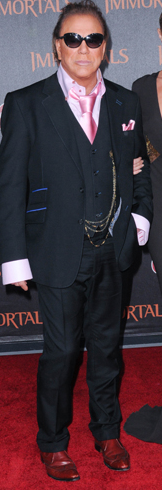

Most men today are lost when it comes to wearing a suit. A young man will come to me and have this idea of what someone looks like in a suit, usually a celebrity or a male model featured in a magazine. Without thinking what exactly about this particular suit on a certain person is so attractive, the young man will assume that any suit will make him look like the gentleman in the picture he saw. This is incorrect.
Here are some things to keep in mind when purchasing and wearing a suit.
- Jacket Length
- Sleeve Length
- Pant Length and Width
Historically, the jacket length on a man's suit should be long enough so that when wearing the jacket with his arm straight down, he should be able to cuff the bottom of the jacket with his hand when folding his fingers like a fist. This is no longer the case. An ideal place to for the jacket length to end is right around where the wrist meets the hand of the person wearing the jacket.
The worst look you could do is wear a jacket with the sleeves so long that someone might think of you as a little boy playing dress up in his dad's suit. The ideal length for your sleeves on your jacket are so that your shirt sleeves stick out about a quarter of an inch to a half an inch. The best length for your shirt sleeve is for it to end at wear your hand meets your wrist.

No! |
Yes. |
Pant length is very important. Wearing pants that are too long will make you look shorter and heavier. I've heard many salespeople tell their customers that you'll want your pants to break once. I recommend no breaks. No breaks creates a super chic and clean look. If you are going to wear pants with no break, it's vital for them to be tapered through the leg down to the ankle. If your pants are not slim, they will flail around when walking.